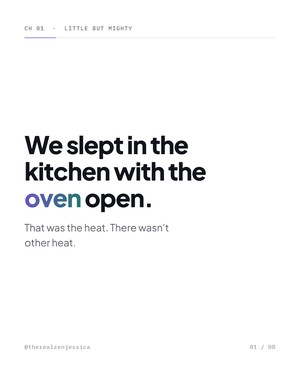
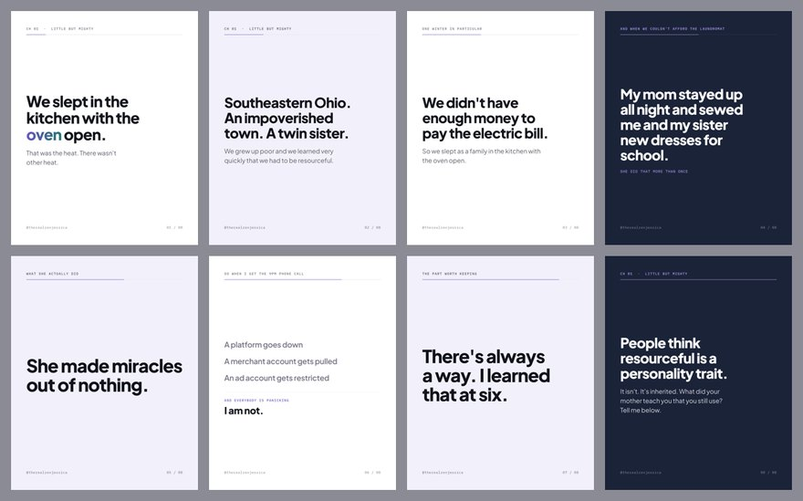

The oven
ReadyLittle but mighty · 05:18 to 05:51
We slept in the kitchen with the oven open.
That was the heat. There wasn't other heat.
When we couldn't afford the laundromat my mom stayed up all night and sewed me and my twin sister brand new dresses to wear to school the next day.
She made miracles out of nothing.
People ask me where the resourcefulness comes from like it's a personality trait.
It isn't. It's inherited. My mother taught me there is always a way.
So when a platform goes down, or a merchant account gets pulled, or an ad account gets restricted, and everybody's panicking?
There's always a way. I learned that at six.

zj-ch01a-01.png … -08.png
· Drive folder 2026-09-02 Ch1 We slept in the kitchen with the oven open